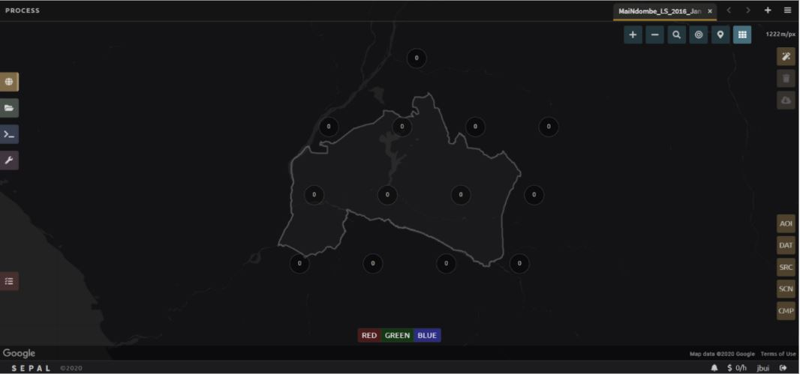

Module 1. Mosaic image generation¶
Generating mosaics of remote sensing data from satellite data is the first step in our classifications. In this Module, you will learn how to navigate SEPAL and how to create mosaics using imagery from the Landsat or Sentinel satellites. At the end of this section, you will be able to create the satellite imagery mosaics you will need for Modules 2 & 3.
This module should take you approximately 1-2 hours.
Exercise 1.1. An introduction to SEPAL¶
In this exercise, you will be introduced to the SEPAL interface. You will learn how to access SEPAL’s features to facilitate the remote sensing exercises in later modules.
Objectives |
Prerequisites |
|---|---|
Navigate the SEPAL interface |
Internet access |
Learn about the functionality of SEPAL |
SEPAL account (see ‘Getting Started’) |
Part 1. Open SEPAL¶
Navigate to https://sepal.io/ to open SEPAL.
Type in your Username and Password and click Login.

When working in SEPAL, do not click your browser’s back button. This will go back to the previous webpage. Use the buttons within SEPAL to navigate to previous pages. There may also be an arrow in the upper left or right-hand corner of the SEPAL interface to navigate to a previous window.
Part 2. SEPAL Interface Home¶
Once you are logged in, you will see the following screen. Notice that your username is displayed in the bottom right of the window.

There are four main navigation tabs in the dock on the left side of the screen.
Process: select imagery and create mosaics.
Files: navigate through your personal SEPAL folders. This is where you can download or delete data, as well as visualize it using the Data Visualization link.
Terminal: access to the command line for the LINUX server.
Apps: links to a variety of pre-loaded tools.
At the lower left is the red Tasks tab. Clicking on this brings up a list of currently running tasks.
Account Information can be found in the bottom right of the webpage by clicking the button that shows your username. This opens an overlay that displays important user account information.
You can edit your user account info, including Name, Password, Email and Organization here.
Click Save to make those changes permanent. However, you cannot edit your Username in this interface.
Change the Google Account associated with your SEPAL account by clicking Use my own Google Account and following the instructions. SEPAL relies on Google Drive as a storage space for data accessed through the platform. Any imagery tiles or mosaics that you “retrieve” will first be saved to a Google Drive account before you can visualize and process them in SEPAL.
Be sure to connect your Google Account in order to be able to Retrieve Mosaics in the next Exercise 1.2. You should use the same account you used to sign up for Google Earth Engine.
Next to your Account Information is a section called User Report, represented by the $ X/h. This shows you the allotted budgets you have. An instance refers to any of the various processes that you can perform in SEPAL. If you are running any processes in your current session, they will show up here under Sessions.
{kind=link}
Part 3. Process Tab¶
Click the Process tab on the left side of the window.
You should now see four options in the center of the screen.
Optical Mosaic allows you to create a mosaic using Landsat and/or Sentinel 2 data. This is what we will do in Exercise 1.2.
Radar Mosaic allows you to create a mosaic using Sentinel 1 data.
Classification allows you to use a random forest model to classify images from SEPAL or GEE. This will be the focus of Module 2.
Time Series allows you to download time series information to your SEPAL storage.
When you click on one of these options, it will open a new tab with the GUI interface that allows you to specify your desired options.
Part 4. Files Tab¶
Click the green Files tab on the left side of the window. This will display all of your files in SEPAL.
For example, click the downloads folder to expand it. This will display the folders containing any of the data you have downloaded in SEPAL. If you have not downloaded mosaics in SEPAL yet, then this folder will be empty.

Notice that there are four buttons at the top right of the window. The three rightmost buttons are inactive, but activate when you select a file.
The left button will show hidden files (files and folder names starting with ‘.’).
The second button will download selected data to your local computer.
- The third button will delete the selected folder or file.
The last button will clear your selection.
Part 5. Terminal Tab¶
Click the Terminal tab on the left side of the screen.
This links you to the Linux command line that you can use in a variety of ways to manage data, load data from an outside location or process data using a series of commands.
When you initially load the Terminal, you will see information about your usage and the available types of instances you can initialize.
One of the most important features of the Terminal is the ability to increase your instance size. The default instance is not sufficient for analyzing large amounts of data, for example running a classification on a large area.
To increase the size of your instance, first examine the “Available instance types” table. This is updated periodically but an example from September of 2020 is shown below.
Choose an instance Type that fits your needs. Frequently a t2 or m2 is sufficient and cost effective.
Next to the “Select (t1):” text, type in ‘t2’ or your chosen instance type.
Press Enter on your keyboard.
Wait for the new instance to start. This will take several minutes.

Part 6. Apps Tab¶
Click the Apps tab on the left side of the screen. This will open up a screen that shows applications that you can access through SEPAL.

This will bring up a list of apps you can run in SEPAL. More information about each app is found by clicking on the “i” on the right hand side. Some of the apps include:
R Studio: provides access to R environment where you can run processing scripts and upload data to your SEPAL folder.
Stratified Area Estimator- Design: tool for creating stratified designs to estimate areas. We will use this tool in Module 4.
Stratified Area Estimator- Analysis: tool for analyzing the results of your stratified design sampling to estimate areas. We will use this tool in Module 4.
Geo Processing- Beta: offers a selection of easy-to-use change detection and segmentation tools.
BFAST Explorer: tool for performing pixel-based time series analysis of Landsat Surface Reflectance data.
Congratulations! You have successfully completed this exercise. You now know how to navigate the SEPAL interface and access its many tools and functions.
Exercise 1.2. Mosaic generation (Landsat & Sentinel 2)¶
SEPAL provides a robust interface for generating Landsat and Sentinel 2 mosaics. Mosaic creation is the first step for the image classification and two date change detection processes covered in Modules 2 and 3 respectively. These mosaics can be downloaded locally or to your Google Drive.
In this exercise, you will create a Landsat mosaic for the Mai Ndombe region of the Democratic Republic of the Congo, where REDD+ projects are currently underway.
Objectives |
Prerequisites |
|---|---|
Learn how to create an image mosaic |
SEPAL account |
Become familiar with a variety of options for selecting dates, sensors, mosaicking and download options. |
|
Create a cloud-free mosaic for 2016 |
Part 1. Create a Landsat Mosaic¶
If SEPAL is not already open, click to open SEPAL in your browser: https://sepal.io/ and login.
Click on the Processing tab.
Then, click on Optical Mosaic.
When the Optical Mosaic tab opens, you will see an Area of Interest window in the lower right hand corner of your screen.
There are three ways to choose your area of interest. Bring up the menu by clicking the carrot to the right of the window label.
Select Country/Province (the default).
Select from EE table
Draw a polygon.

We will use the Select a country/province option.
In the list of countries that pops up, scroll down until you see the available options for Congo, Dem Republic of. Note there is also the Republic of Congo, which is not what we’re looking for.
Under Province/Area, notice that there are many different options.
Select Mai-Ndombe, then click Next.

In the Date menu you can select the Year you are interested in or click on More.
This interface allows you to refine the dates or seasons you are interested in.
You can select a target date (The date in which pixels in the mosaic should ideally come from), as well as adjust the start and end date flags.
You can also include additional seasons from the past or the future by adjusting the Past Seasons and Future Seasons slider. This will include additional years’ data of the same dates specified. For example, if you’re interested in August 2015, including one future season will also include data from August 2016. This is useful if you’re interested in a specific time of year but there is significant cloud cover.
For this exercise, let’s create imagery for the dry season of 2019.
Select July 1 of 2019 as your target date (2019-07-01), and move your date flags to May 1-September 30.
Click Apply.

Now select the Data Sources (SRC) you’d like. Here, select the Landsat L8 & L8 T2 option. The color of the label turns brown once it has been selected.
L8 began operating in 2012 and is continuing to collect data;
L7 began operating in 2001, but has a scan-line error that can be problematic for dates between 2005-present; and
L4-5 TM, which collected data from July 1982-May 2012.
Sentinel 2 A+B began operating in June 2015.
Click Done.
Now SEPAL will load a preview of your data. By default it will show you where RGB band data is available. You can click on the RGB image at the bottom to choose from other combinations of bands or metadata.
- When it is done, examine the preview to see how much data is available. For this example, coverage is good. However, in the future when you are creating your own mosaic, if there is not enough coverage of your area of interest, you will need to adjust your parameters.
To do so, notice the five tabs in the lower left. You can adjust the initial search parameters using the first three of these tabs. For example, Click on Dat to expand the date range if you would like.
The last two tabs are for scene selection and composite, which are more advanced filtering steps. We’ll cover those now.

We’re now going to go through the scene selection process. This allows you to change which specific images to include in your mosaic.
You can change the scenes that are selected using the SCN button on the lower right of the screen. You can use all scenes or select which are prioritized. You can revert any changes by clicking on Use All Scenes and then Apply.
Change the Scenes by selecting Select Scenes with Priority: Target Date

Click Apply. The result should look like the below image.

Notice the collection of circles over the Mai Ndombe study area and that they are all populated with a zero. These represent the locations of scenes in the study area and the numbers of images per scene that are selected. The number is currently 0 because we haven’t selected the scenes yet.
Click the Auto-Select button to auto-select some scenes.
{kind=link}

You may set a minimum and maximum number of images per scene area that will be selected. Increase the minimum to 2 and the maximum to 100. Click Select Scenes. If there is only one scene for an area, that will be the only one selected despite the minimum.
{kind=link}
You should now see imagery overlain with circles indicating how many scenes are selected.

You will notice that the circles that previously displayed a zero now display a variety of numbers. These numbers represent the number of Landsat images per scene that meet your specifications.
Hover your mouse over one of the circles to see the footprint (outline) of the Landsat scene that it represents. Click on that circle.

In the window that opens, you will see a list of selected scenes on the right side of the screen. These are the images that will be added to the mosaic. There are three pieces of information for each:
Satellite (e.g. L8, L7, L5 or L4)
Percent cloud cover
Number of days from the target date
To expand the Landsat image, hover over one of the images and click Preview. Click on the image to close the zoomed in graphic and return to the list of scenes.
To remove a scene from the composite, click the Remove button when you hover over the selected scene.

On the left hand side, you will see Available Scenes, which are images that will not be included in the mosaic but can be added to it. If you have removed an image and would like to re-add it or if there are additional scenes you would like to add, hover over the image and click Add.
Once you are satisfied with the selected imagery for a given area, click Close in the bottom right corner.
You can then select different scenes (represented by the circles) and evaluate the imagery for each scene.

You can also change the composing method using the CMP button on the lower right.
Notice that there are several additional options including shadow tolerance, haze tolerance, NDVI importance, cloud masking and cloud buffering.
For this exercise, we will leave these at their default settings.
If you make changes, click Apply after you’re done.

Now we’ll explore the Bands dropdown. Click on the Red Green Blue at the bottom of the page.
The below dropdown menu will appear.
Select the NIR, RED, GREEN band combination. This band combination displays vegetation as red, with darker reds indicating dense vegetation. Bare ground and urban areas appear grey or tan, while water appears black. NIR stands for near infrared.
Once selected, the preview will automatically show what the composite will look like.
Use the scroll wheel on your mouse to zoom in to the mosaic and then click and drag to pan around the image. This will help you assess the quality of the mosaic.

The map now shows the complete mosaic that incorporates all of the user-defined settings.

Using what you’ve learned, take some time to explore adjusting some of the input parameters and examine the influence on the output. Once you have a composite you are happy with, we will download the mosaic (instructions follow).
For example, if you have too many clouds in your mosaic, then you may want to adjust some of your settings or choose a different time of year when there is a lower likelihood of cloud cover.
The algorithm used to create this mosaic attempts to remove all cloud cover, but is not always successful in doing so. Portions of clouds often remain in the mosaic.
Part 2. Name and Save your Recipe and Mosaic¶
Now, we will name the ‘recipe’ for creating the mosaic and explore options for the recipe.
You will use this recipe when working with the classification or change detection tools, as well as when loading SEPAL mosaics into SEPAL’s Collect Earth Online.
You can make the recipe easier to find by naming it. Click on the tab in the upper right and type in a new name. For this example use MiaNdombe_LS8_2019_Dry.
Now let’s explore options for the recipe. Click on the three lines in the upper right hand corner.
You can save the recipe (SEPAL will do this automatically on retrieval) so that it is available later.
You can also **Duplicate the recipe.**This is useful for creating two years of data, as we will do in Module 3.
Finally you can Export the recipe. This downloads a zip file with a JSON of your mosaic specifications.
Click on Save recipe…. This will also let you rename the mosaic if you choose.
{kind=link}
Now if you click on the three lines icon, you should see an additional option: Revert to old revision…

Clicking on this option brings up a list of auto-saved versions from SEPAL. You can use this to revert changes if you make a mistake.
Now, when you open SEPAL and click the Search option, you will see a row with this name that contains the parameters you just set.

Finally, we will save the mosaic itself. This is called ‘retrieving’ the mosaic. This step is necessary to perform analysis on the imagery.
To download this imagery mosaic to your SEPAL account, click the Retrieve button.


A window will appear with the following options:
Bands to Retrieve: select the desired bands you would like to include in the download.
Select the Blue, Green, Red, NIR, SWIR 1 and SWIR 2 bands. These are visible spectrum and infrared data collected by Landsat.
Other bands that are available include Aerosol, Thermal, Brightness, Greenness, and Wetness. More information on these can be found at: https://landsat.gsfc.nasa.gov/landsat-data-continuity-mission/.
Metadata on Date, Day of Year, and Days from Target can also be selected.
Scale: the resolution of the mosaic. Landsat data is collected at 30m resolution, so we will leave the slider there.
Retrieve to: Sepal Workspace is the default option. Other options may appear depending on your permissions.
When you have the desired bands selected, click Retrieve.
You will notice the Tasks icon is now spinning. If you click on it, you will see the data retrieval is in process. This step will take some time.

This will take 25 minutes or more to finish downloading, however, you can move on to the next exercise without waiting for the download to finish.
Congratulations! You have successfully completed this exercise. You now know how to create a Landsat mosaic using the many customizable parameters in SEPAL.